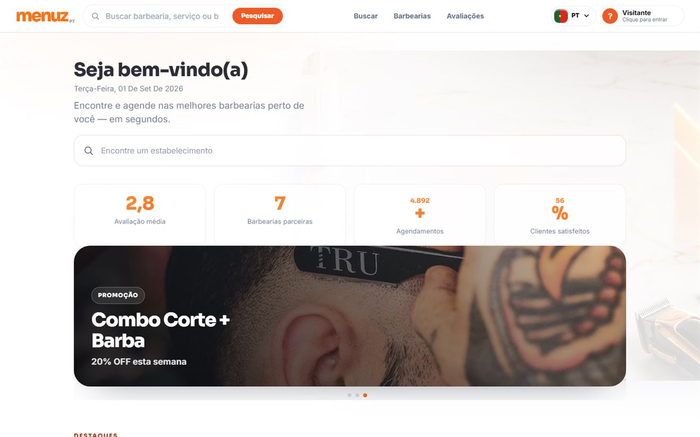

Projetos / Menuz Barbearias
Menuz Barbearias
Plataforma de descoberta e agendamento em barbearias, com catálogo de cortes e geolocalização.

Resumo
O que é este projeto?
Uma plataforma web para encontrar e agendar em barbearias. Reúne pesquisa de estabelecimentos, avaliações, promoções em destaque, um catálogo de cortes filtrável e uma secção de barbearias próximas com mapa.
Foi construída para poder servir vários estabelecimentos: toda a identidade visual está declarada em variáveis CSS, o que permite adaptar a marca sem tocar na estrutura.
Problema
Qual o problema que precisava ser resolvido?
Uma barbearia precisa de estar online rapidamente e com marca própria, mas o problema real está antes disso: o primeiro contacto costuma começar por uma pergunta vaga — "quanto custa?" — e a conversa morre aí, porque o cliente não sabe o que pedir e o barbeiro não sabe o que ele quer.
Solução
Como o sistema resolve esse problema?
O cliente escolhe o corte antes de escrever a primeira mensagem. Ao selecionar um corte no catálogo, o formulário de contacto e o link do WhatsApp ficam preenchidos com o nome desse corte — a conversa começa já com a informação que interessa, em vez de começar do zero.
A pesquisa e a secção de barbearias próximas usam a localização do visitante para mostrar o que está à mão, com um mapa reduzido no resultado.
Meu papel
O que eu desenvolvi?
Único desenvolvedor do projeto. Os 49 commits do repositório são meus: conceito, interface, catálogo filtrável, geolocalização, mapa, integração com WhatsApp e publicação.
Construí também o sistema de rebranding: as cores, tipos e detalhes da marca vivem em variáveis CSS no seletor raiz, por isso adaptar a plataforma a outro estabelecimento é alterar um bloco de declarações, e não reescrever o site.
Principais funcionalidades
- Pesquisa de estabelecimentos por barbearia ou serviço.
- Catálogo de cortes com grelha filtrável e carrossel de destaques.
- Seleção que pré-preenche o contacto — escolher um corte preenche o formulário e a mensagem de WhatsApp.
- Barbearias próximas com geolocalização do visitante e mapa reduzido no resultado.
- Avaliações e promoções apresentadas na página inicial.
- Identidade trocável por variáveis CSS, para servir outro estabelecimento sem alterar a estrutura.
- Sem passo de build — o site publica-se diretamente a partir do repositório.
Resultado
A plataforma está publicada no GitHub Pages e o código é público. É o projeto onde trabalhei a interface com mais detalhe: filtros, carrossel, mapa e a ligação entre a escolha do corte e o canal de contacto.